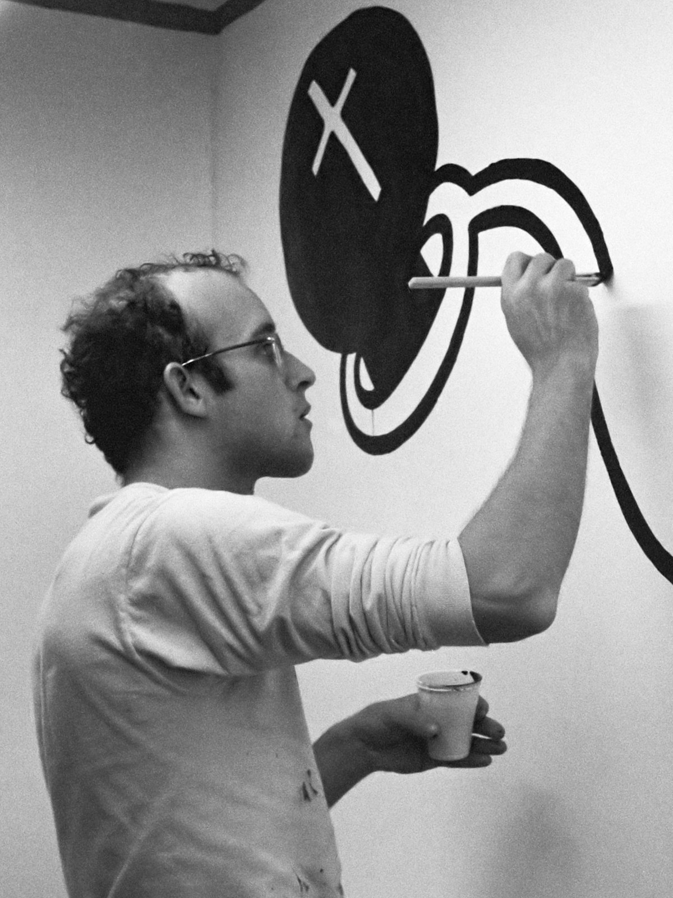
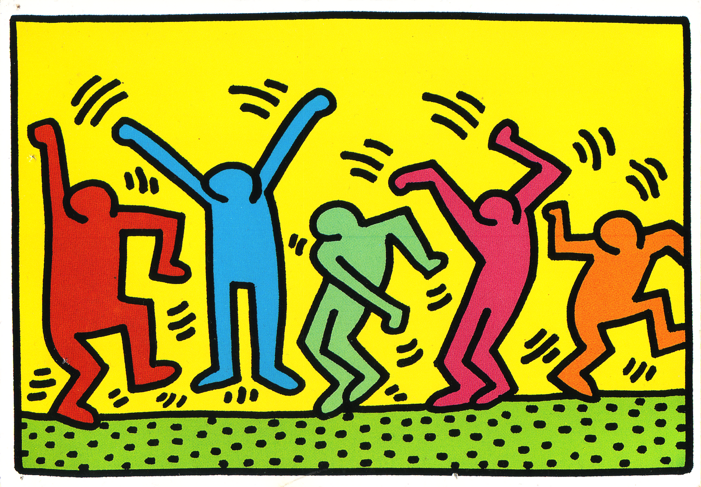
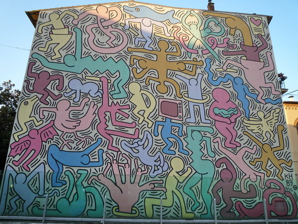

Keith Haring (Reading 1958-New York 1990) è stato un writer e pittore statunitense.
nasce il 4 maggio 1958 a Reading, in Pennsylvania, e cresce nella vicina Kutztown. Sviluppa un grande amore, in età infantile,
per il disegno, passione che asseconda, imparando dal padre le competenze di base per realizzare fumetti.Dopo il diploma di scuola superiore, conseguito
nel 1976, Haring si iscrive alla Scuola d´Arte professionale a Pittsburgh, un istituto nel quale si insegna grafica commerciale che abbandonò 2 mesi dopo.
Prosegue da solo, la propria ricerca, sempre più decisamente orientata a sbocchi espressivi e non tecnici. Nel 1978 tiene la prima mostra personale al

Pittsburgh Arts and Crafts Center. Nello stesso anno, Haring si trasferisce a New York e si iscrive alla School of Visual Arts. A New York, Haring si
inserisce rapidamente nella comunità artistica alternativa che si stava sviluppando al di fuori della gallerie e dei sistemi museali, on the road, nelle
vie del centro, nei sotterranei delle metropolitane, nei club ed ex sale da ballo.
Qui stringe amicizia con colleghi artisti Kenny Scharf e
Jean-Michel Basquiat, così come con musicisti, artisti di performance e writers
che costituivano la comunità.
Travolto dall´intensa energia dell´ambiente underground newyorkese comincia a organizzare e a partecipare a mostre ea performance al Club 57 e in altre sedi alternative.
Come studente a SVA, Haring ha sperimentato performance, video, installazione e collage, mantenendo una forta propensione per il disegno.Nel 1980 avviene il salto dimensionale,
dal foglio ai grandi tabelloni. Nota, infatti, che i pannelli pubblicitari inutilizzati, all´interno deglle stazioni della metropolitana, sono coperti di carta nera
diviene familiare ai pendolari di New York, che spesso si fermano a parlare conl´artista.. La metropolitana diviene, come sosteneva Haring, un "laboratorio" pubblico.
opaca.Così,utilizzando il gesso bianco, passa da un pannello all´altro, da una stazione all´altra, disegnando uomini che sono un incrocio tra le figure delle incisioni rupestri e quelle dei cartoni animati.

Tra il 1980 e il 1985, Haring produce centinaia di questi disegni pubblici, stesi in in linee ritmiche veloci, a volte creando ben quaranta "subway drawings" in un giorno. Questo flusso ininterrotto di immagini
Nell´aprile del 1986, Haring apre il
Pop Shop, un negozio a Soho dove vende T-shirt, giocattoli, poster, pulsanti e magneti recanti le sue immagini. Haring
aveva il desiderio di mettere le proprie opere a disposizione del più vasto pubblico possibile, e ha ricevuto un forte sostegno per il suo progetto da parte di amici, fan e mentori, tra cui Andy Warhol.
Durante la sua carriera, Haring ha dedicato molto del suo tempo a lavori pubblici, che spesso portavano messaggi sociali. Ha prodotto più di 50 opere
pubbliche tra il 1982 e il 1989, in decine di città in tutto il mondo, molte delle quali sono state create, come beneficenza, per ospedali, centri diurni per bambini e orfanotrofi.
Nel 1988 all´artista viene diagnosticato l´AIDS nel 1988 e l´anno successivo apre la Keith Haring Foundation, per la lotta alla malattia.
Nel corso di una breve ma intensa carriera, Haring è stato presente in più di 100 mostre personali e collettive. Esprimendo concetti universali ( nascita, morte, amore, sesso e guerra) con il primato della linea e l´ immediatezza del messaggio, Haring
è stato in grado di richiamare l´attenzione di un vasto pubblico, trasformando il proprio segno nel linguaggio visivo del 20 secolo.
Keith Haring è morto per complicazioni legate all´AIDS all´età di 31 anni il 16 febbraio 1990.
indice